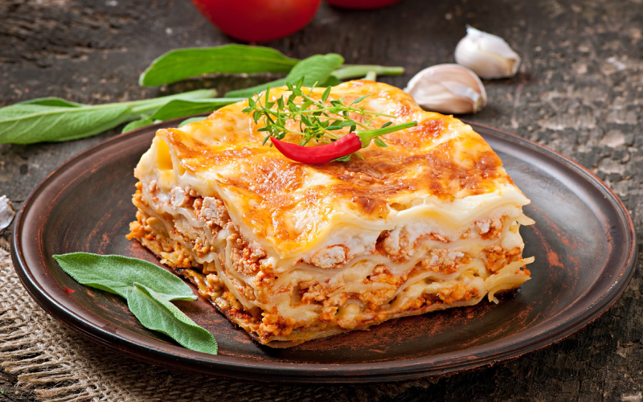

Lasanha

Esta receita de lasanha com recheio de carne moída é fácil, prática e rápida de preparar. Feita em camadas, a lasanha é muito saborosa e suculenta, pois além da carne moída, leva molho branco com apenas 4 ingredientes que você também aprende a preparar aqui. As camadas são separadas por massa de lasanha comprada no mercado, peito de peru e queijo muçarela, garantindo um sabor especial ao prato. Esta receita de lasanha é ideal para ser servida no almoço ou jantar, mas também pode ser o prato principal de uma ocasião especial, como aniversário, encontro romântico e muito mais. Para preparar o recheio desta lasanha, você vai utilizar meio quilo de carne moída, molho de tomate, creme de leite, cebola, alho, pimentão, azeite, orégano e sal a gosto. Aprenda o passo a passo!
Ingredientes - Recheio de carne moída
-
1 colher de sopa de azeite
-
1 cebola média picada
-
2 dentes de alho picados
-
Meio pimentão verde picado
-
Meio quilo de carne moída
-
400 gramas de molho de tomate
-
50 gramas de creme de leite
-
Sal a gosto
-
Orégano a gosto
Ingredientes - Molho branco
-
2 colheres de sopa de margarina
-
6 colheres de sopa de farinha de trigo
-
400 mililitros de leite integral
-
Sal a gosto
Ingredientes - Montagem
-
12 folhas de massa de lasanha
-
300 gramas queijo muçarela
-
300 gramas de peito de peru
Modo de preparo - Recheio de carne moída
- Em uma panela em fogo médio, aqueça 1 fio de azeite.
- Acrescente a cebola e refogue.
- Quando a cebola começar a dourar, adicione o alho na panela e deixe refogando.
- Acrescente o pimentão verde, o meio quilo de carne moída, o sal e refogue até que a carne fique no ponto.
- Junte o molho de tomate à carne moída refogada e mexa.
- Coloque o creme de leite no molho de carne moída e volte a mexer.
- 7. Finalize com orégano a gosto e reserve.
Modo de preparo - Molho branco
- Em uma panela em fogo médio, aqueça a margarina.
- Acrescente as 6 colheres de farinha de trigo e mexa.
- Adicione os 400 mililitros de leite integral, o sal, mexendo até o molho branco engrossar.
- Desligue o fogo e reserve.
Modo de preparo - Montagem
- Espalhe o molho branco no fundo de um refratário.
- Distribua as folhas de massa de lasanha sobre o molho branco.
- Adicione uma camada do recheio de carne moída.
- Cubra com uma camada de peito de peru, e uma camada do queijo muçarela.
- Cubra novamente com o molho branco.
- Coloque mais uma camada de queijo muçarela e finalize com orégano.
- Leve ao forno a 180 graus Célsius por aproximadamente 10 minutos, ou até o queijo estar completamente derretido.